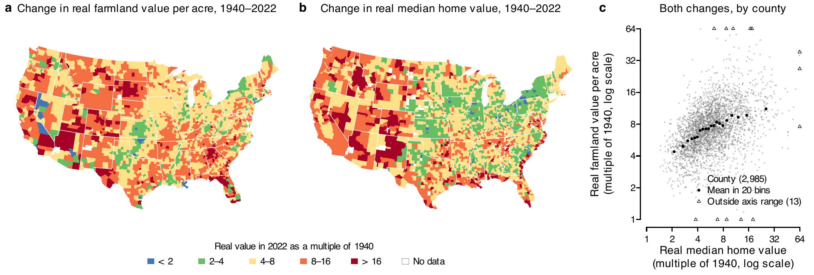
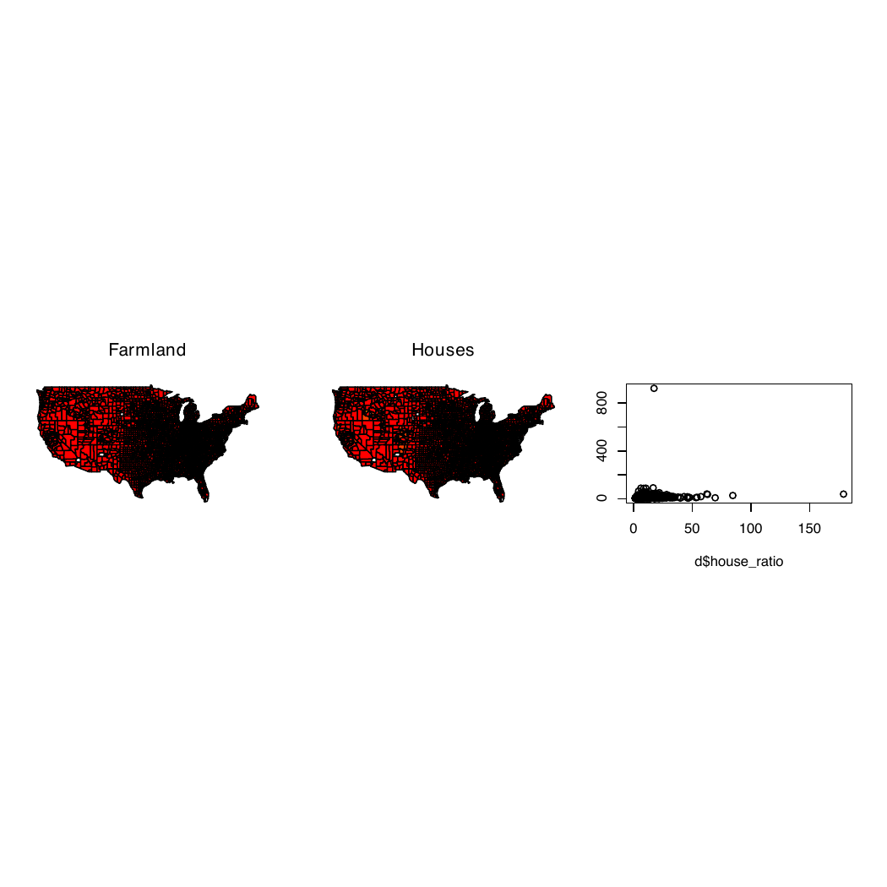
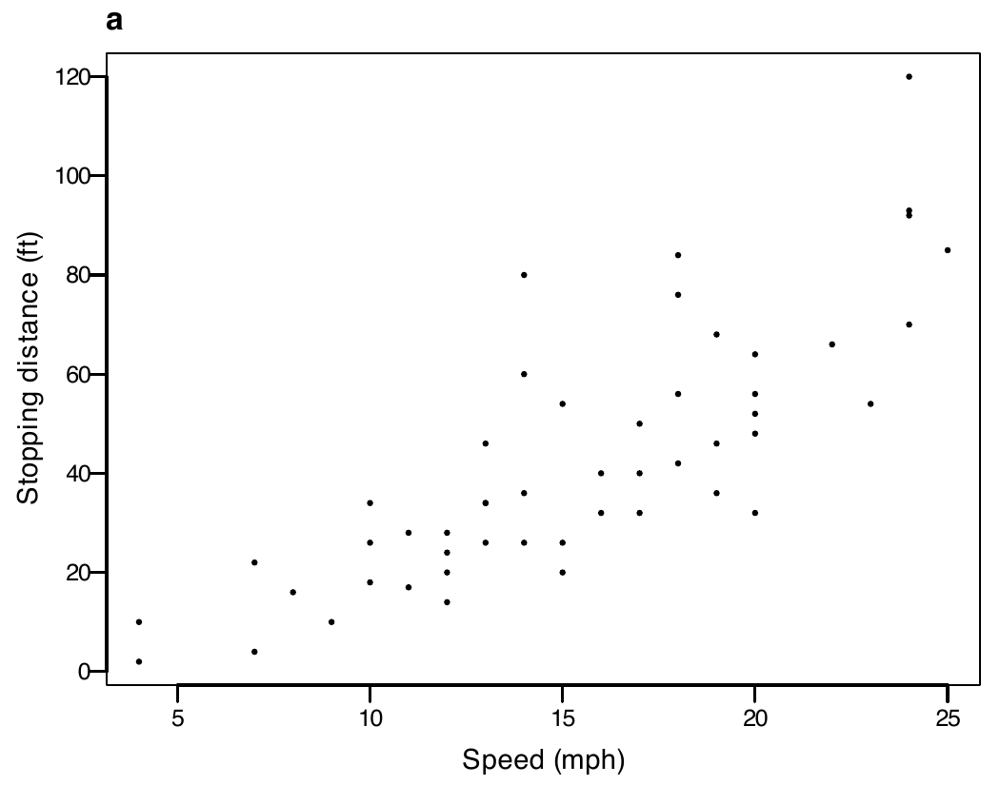
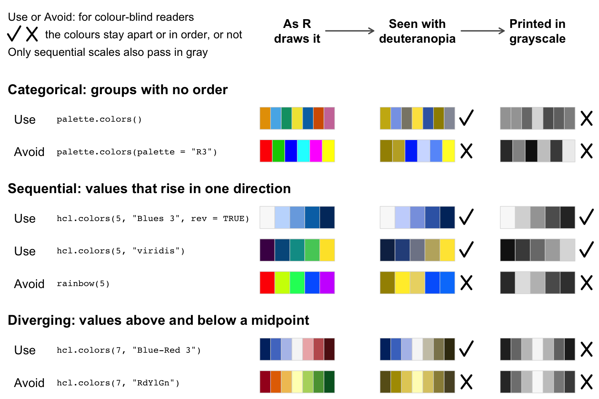
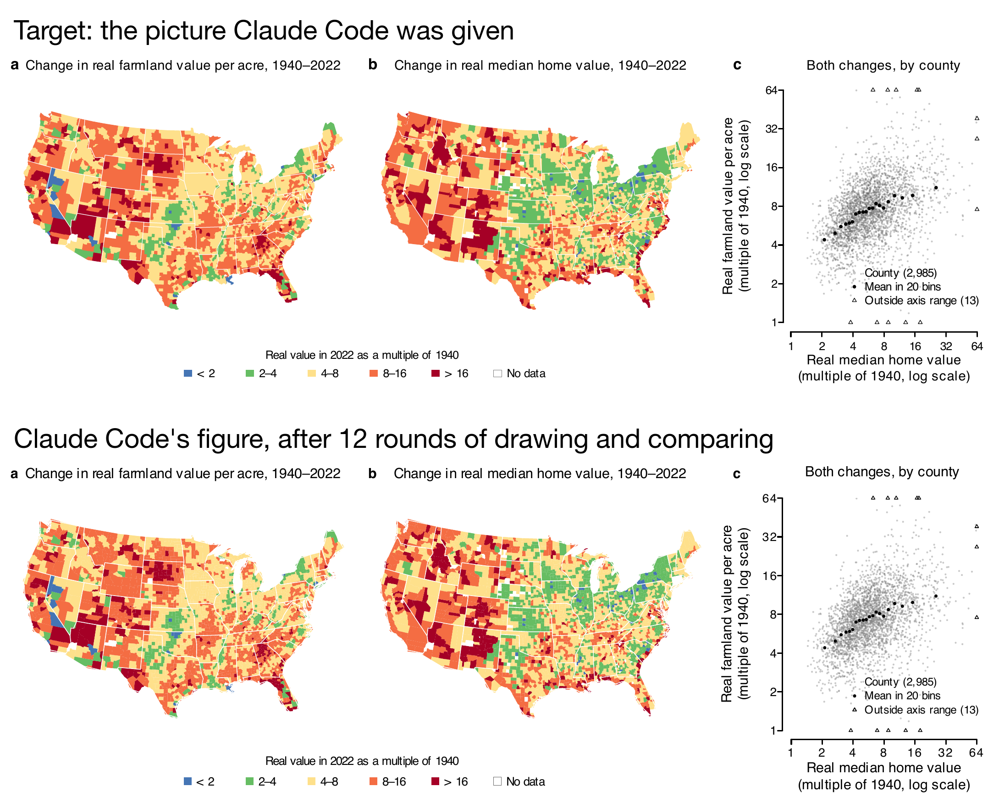
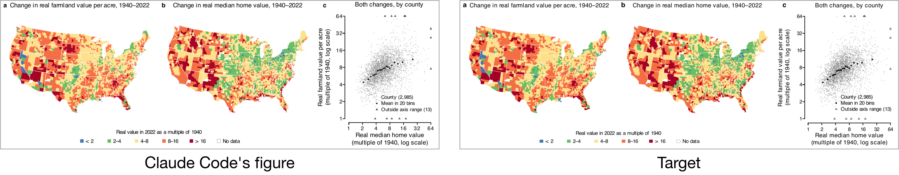
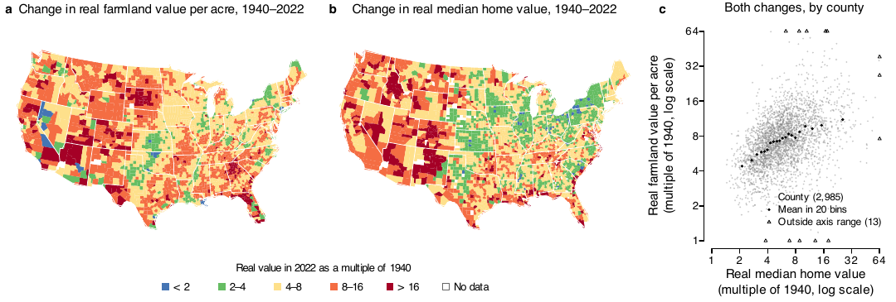
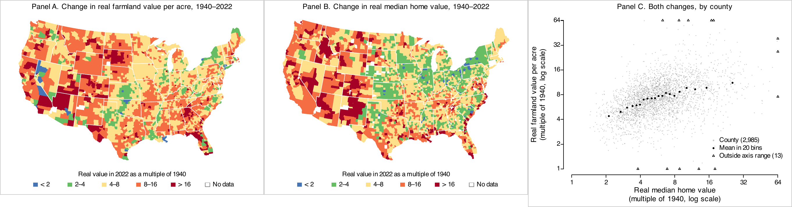
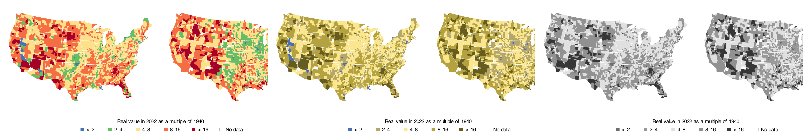

12 · Publication graphics
Tuesday, October 6, 2026
How to draw a figure to a journal’s rules: first by asking an agent to match a picture of the finished figure, then by writing each journal’s rules in a file that the R code, a checking script and an agent all read. One figure runs through the session: county maps of how much farmland values and home values rose from 1940 to 2022, drawn for Nature and for the American Economic Review. The project is a zip file. Its data, including two licensed files, are a separate download for the class, with a Cornell NetID:
https://cornell.box.com/s/mx2eg35oytjt2a7xjsapuh8tbq2e6edc
Replace the project’s data folder with the data folder in that zip.
Plan for today
- What journals require of your figures
Technical specifications and readability · Nature · the AER · when they ask · presentation and referees · matching them in R · colours - Asking an agent to match a target figure
The default code · the target picture · Claude Code edits the code (live) · what it changed · where it misses · what it costs - Using agents to write spec files and switch journals
Why write the requirements in a file · YAML · a script that checks a PDF against the spec · Claude Code writes Nature’s spec file (live) · the AER’s spec file · Claude Code rewrites the script to read the specs (live) · switching journals
Figure 1, ready for Nature

- Question: did farmland values rise more in counties where home values rose more?
- a Farmland value per acre (Census of Agriculture) and b median value of an owner-occupied home (1940 census; 2018–2022 American Community Survey), each as its 2022 value divided by its 1940 value. c One against the other, 2,985 counties.
- Real terms: each year’s dollars divided by the consumer price index. 183 mm wide, Nature’s two-column width.
Figure 1 with R’s default settings

The same data, with pdf(), par(mfrow = c(1, 3)), map(fill = TRUE), cut(x, 6) and plot(), with nothing else set. The code is at the start of Part 2.
- A 7 × 7 in page; no journal prints that size, and two thirds of it is blank
- Fonts not embedded: the file holds no copy of the typeface
- Six classes of equal width: one outlier stretches them, and 3,052 of 3,053 counties get the same red
- No key, and black county borders that turn the East solid
- The x label is a variable name,
d$house_ratio; the y label does not show
1 · What journals require of your figures
Two kinds of requirements
- Technical specifications, set by the journal and measured in the file:
- Width and height of the file
- Text size and line weight, in points (1 pt = 1/72 inch)
- Fonts embedded: a copy of each typeface inside the file
- A vector file (PDF or EPS, sharp at any zoom), no pictures inside
- Readability, judged by looking at the figure:
- Can a reader see the main comparison?
- Is any text cut off, overlapping, or on top of data?
- Do titles and labels say what is shown, with units?
- Can every class be told apart, in gray and by a colour-blind reader?
- Do the class breaks spread the data across the classes?
A vector file stores shapes and text as geometry, as PDF and EPS do, so it stays sharp at any zoom; a PNG is a grid of pixels. An embedded font is a copy of the typeface inside the file, so the figure prints the same on any computer. A point (pt) is 1/72 inch.
The technical specifications can be checked by a program that reads the PDF: each answer is a number, and the journal gives the range it accepts. Readability needs someone to look at the figure: a person, or an agent that looks at an image of it. The project splits the work along the same line: a script measures the specifications, and an agent judges readability (see “Agents that review and redraw a figure” below).
Nature and AER requirements for size, fonts and text
| Requirement | Nature’s words | The AER’s words |
|---|---|---|
| Width | “Nature’s standard figure sizes are 89 mm wide (single column) and 183 mm wide (double column).” | Not stated |
| Font | “Lettering should be in a sans-serif typeface, preferably Helvetica or Arial, the same font throughout all figures in the paper.” | Not stated |
| Text size | “Maximum text size for all other text should be 7 pt; minimum text size should be 5 pt.” | Not stated |
| Panel labels | “Separate panels in multi-part figures should each be labelled with 8 pt bold, upright (not italic) a, b, c.” | For file names: “use letters for indicating individual panels (e.g., Figure1a.ppt, Figure1b.ppt, Figure1c.ppt, etc.)” |
| Line weight | “Line weights and strokes should be set between 0.25 and 1 pt at the final size” | Not stated |
Pages: Nature, final submission and preparing figures; AER style guide. Not stated: the rule is yours to set, once for the whole paper.
Nature and AER requirements for files, colour and labels
| Requirement | Nature’s words | The AER’s words |
|---|---|---|
| File format | “Vector EPS or PDF format for figures containing line drawings and graphs”; “Embed fonts (True Type 2 or 42)” | “Figures must be supplied as vector-based graphics in one of the following formats—vector PDF, EPS, AI, WMF, or PPT.” |
| Photographs and images | “All photographic images must be supplied at a minimum of 300 dpi at the maximum size they can be used.” | “Photographs and other images (maps, screenshots, etc.) should be provided at 300 dpi” |
| Colour | “Colour artwork can be provided in RGB (recommended) or CMYK format.”; “An accessible colour palette to be used” | Not stated |
| Labels | “All axes to be labelled with units in parentheses, e.g. Data (unit)” | “If there are variables (italics) or matrices and vectors (boldface) in figures, they should be designated as such.” |
Pages: Nature, final submission and preparing figures; AER style guide. The AER also asks that the files “correspond to the figures in your accompanying PDF”.
The quotes are copied from the journals’ pages; the project’s specs/nature.yml and specs/aer.yml hold the same sentences, each with the page it comes from. One Nature sentence keeps a typo: “Do not rasterize or covert text to outlines.” The AER’s figures section also says “Source notes, if any, should be placed after other notes related to the figure.”
When journals ask for the final figure files
- Nature: “The Nature journals are flexible with regard to the format of initial submissions.” “If revisions are requested, the editor will provide detailed formatting instructions at that time.”
- AER: “Adherence to the journal’s Style Guide is required for accepted articles but is optional at the time of submission.”
- PNAS: each figure as a separate high-quality PDF or EPS file, with the revised manuscript.
- Journals ask for the final files at revision (Nature, PNAS) or at acceptance (AER). With the journal’s rules in a file and a figure script that reads them (Part 3), the final files are one run of the script.
Pages: Nature, initial submission; AER, submissions; PNAS, how to submit a manuscript.
What studies show about presentation and referees
- An experiment on writing: Feld, Lines and Ross (JEBO, 2024)
- Professional editors improved the English of 30 economics papers, with the layout unchanged.
- Economists rated the edited versions 0.2 SD higher and were 8.4 percentage points more likely to accept them for a conference.
- Referees’ reasons for rejecting: Bordage (Acad Med, 2001)
- On 123 conference submissions that at least one reviewer wanted to reject, text difficult to follow and defective tables or figures were among the ten most common reasons.
- A format rule and authors: Card and DellaVigna (JEP, 2014)
- After the AER capped submissions at 40 pages in 2008, 21% came in at 39 or 40 pages, up from 6%.
- The look of the page: Huang (arXiv, 2018)
- A model that saw only page images of computer-vision papers flagged half of the workshop papers (a stand-in for rejected ones) and 0.4% of the conference papers. Referees were not part of the test.
Takeaway: clear writing and readable figures help a paper with referees. No study has sent the same paper to referees in the journal’s format and in a plain one.
Feld, Lines and Ross had 30 economists rate papers written by economics PhD students, each economist seeing either the original or the language-edited version of a paper, never both; most edits were to the title, abstract and introduction, and the gains came from the papers that were poorly written to begin with. Bordage analysed the written comments of reviewers on 151 manuscripts submitted to a medical education conference; excellent writing was among the main strengths of the papers accepted unanimously. Card and DellaVigna studied the AER’s page limit; authors met it partly by tightening spacing and margins. Huang’s “weak” papers were workshop papers standing in for rejections, so the result shows that page layout carries information about a paper; it does not test how referees respond to layout. A wider review of this literature, with about fifty studies, found no test of whether following a journal’s format at first submission changes referees’ decisions.
Matching Nature’s requirements in R
Draw the file at the size it will print. Then every size you set is the size the reader sees.
| Nature requires | Setting in R |
|---|---|
| 89 mm wide, one column (183 mm for two) | cairo_pdf(width = 89 / 25.4): R takes inches |
| Helvetica or Arial, embedded in the file | family = "Helvetica"; cairo_pdf() embeds the font |
| Text from 5 to 7 pt | pointsize = 7 for 7-pt text; cex.axis = 6 / 7 for 6-pt tick labels (printed size = pointsize × cex) |
| Panel letters, 8 pt bold | mtext("a", font = 2, cex = 8 / 7) |
| Lines from 0.25 to 1 pt | lwd = 0.5 / 0.75 for a 0.5-pt line (lwd = 1 is 0.75 pt) |
| A vector file | cairo_pdf() writes one |
Point (pt): a length, 1/72 inch or about 0.35 mm; a font’s size in points is the height from the top of an h to the bottom of a p. With layout() or mfrow and three or more rows or columns, R multiplies every text size by 0.66 (0.83 for two by two): add par(cex = 1) after it.
A journal places a figure at its column width and scales everything in it by the same factor, so sizes only mean something at the printed width. Open the file at that width, in inches (25.4 mm to the inch), and set the text size you want printed. cairo_pdf() writes a vector PDF with the fonts embedded; base R’s pdf() names the font without embedding it. Both write a page 7 × 7 inches unless you give width and height. The Plots pane in RStudio has no fixed size: a figure saved from it with Export takes the pane’s current size, or what you type in the dialog, so the same code gives different files on different screens.
One Nature column, drawn in the R Console
R Console: writes cars-nature.pdf
# cars comes with R: speed (mph) and
# stopping distance (ft) of 50 cars
cairo_pdf("cars-nature.pdf",
width = 89 / 25.4, height = 70 / 25.4,
pointsize = 7, family = "Helvetica")
par(mar = c(3, 3.2, 1.6, 0.6), mgp = c(1.8, 0.5, 0),
cex.axis = 6 / 7, # 6-pt tick labels
lwd = 0.5 / 0.75, # 0.5-pt box; axes 0.75 pt
las = 1)
plot(cars$speed, cars$dist, pch = 16, cex = 0.5,
xlab = "Speed (mph)",
ylab = "Stopping distance (ft)")
mtext("a", side = 3, line = 0.4, adj = 0,
font = 2, cex = 8 / 7) # 8-pt bold letter
dev.off()
The PDF, 89 × 70 mm.
- The width, font, text sizes and line weight come from the table on the previous slide.
Setting text sizes in R
| You set | Printed size |
|---|---|
pointsize = 7 when you open the device |
7 pt for text at cex = 1 |
cex.axis = 6/7 |
tick labels at 6 pt |
mtext("a", cex = 8/7, font = 2) |
an 8-pt bold panel letter |
layout() or mfrow with 3 or more panels |
every size × 0.66, until par(cex = 1) |
Text size in points = pointsize × cex. pointsize is the size of ordinary text, in points (1/72 inch), for the whole file.
cex is a multiplier, not a size. The base it multiplies is the pointsize the device was opened with, 12 unless you say otherwise. layout() and par(mfrow = ) quietly set cex to 0.66 when there are three or more rows or columns (0.83 for exactly two by two), so a three panel figure drawn at pointsize 7 prints its text at 4.6 pt unless par(cex = 1) comes right after layout().
Setting line widths in R
- On R’s PDF devices, “Line widths are multiples of 1/96 inch”:
lwd = 1is 0.75 pt. - Measured in a
cairo_pdf()file before class:lwd0.5, 1, 2 and 4 drew lines of 0.375, 0.75, 1.5 and 3 pt. - Nature’s 0.25 to 1 pt is
lwd0.33 to 1.33.
R Console: writes lines.pdf, three lines at 0.25, 0.5 and 1 pt
pt_to_lwd <- function(pt) pt / 0.75 # also in the project's R/fig_style.R
cairo_pdf("lines.pdf", width = 89 / 25.4, height = 30 / 25.4)
plot(NA, xlim = c(0, 1), ylim = c(0.5, 3.5), axes = FALSE, ann = FALSE)
abline(h = 1:3, lwd = pt_to_lwd(c(0.25, 0.5, 1)))
dev.off()Source: R’s help page, ?pdf. The measurement converted the PDF to SVG with pdftocairo and read each stroke’s width.
Categorical, sequential and diverging colour scales

- Deuteranopia: red–green colour blindness. The eye lacks the cones that sense green, so reds and greens look alike.
“About 1 in 12 men have color vision deficiency”, most often red and green (National Eye Institute). Okabe-Ito colours: Wong (Nature Methods, 2011), the paper Nature’s guide cites. Simulation: Machado, Oliveira and Fernandes (IEEE TVCG, 2009), full severity.
In the image, Use and Avoid are for readers with colour blindness. A tick means the colours stay apart (categorical) or keep their order (sequential, diverging) in that column; a cross means they do not. Only the sequential scales also pass in grayscale, so a figure with categories or a diverging scale that may be printed in gray needs labels, shapes or line types as well as colour.
Pick the kind of scale from the data. Categorical colours mark groups with no order, such as regions; they only need to look different from one another, and the Okabe-Ito colours in palette.colors() stay different for readers with deuteranopia. Sequential colours show values that rise in one direction; the lightness must rise with them, from light to dark, so the order survives in gray and for colour-blind readers. rainbow() fails that test: its yellow and green are lighter than its red and blue, so the middle classes look brighter than the ends. Diverging colours show values above and below a midpoint that means something, such as zero change; two hues meet at a light middle. Red and green at the two ends is the classic failure, since a reader with deuteranopia sees both ends as olive.
Figure 1’s blue-to-red scale runs through green, yellow and orange, a rainbow scale: easy to tell apart in colour, and the checks show its cost, with green and orange alike for deuteranopia and close in gray.
Exercise 1
# Exercise 1 (3 minutes). Pen and paper, or the Console.
#
# Nature's double column is 183 mm wide. You want text at
# 7 pt, tick labels at 6 pt and lines at 1 pt.
# There are 25.4 mm in an inch.
#
# 1. Write the cairo_pdf() call that opens figure1.pdf,
# 183 mm wide and 100 mm tall, with 7-point text in
# Helvetica.
# 2. Which cex.axis gives 6-point tick labels, and which
# lwd gives a 1-point line?
#
# Two answers to compare with the room: the width in
# inches, and the lwd.cairo_pdf("figure1.pdf", width = 183 / 25.4, height = 100 / 25.4,
pointsize = 7, family = "Helvetica") # 7.20 by 3.94 in
6 / 7 # cex.axis = 0.86 gives 6-pt tick labels
1 / 0.75 # lwd = 1.33 gives a 1-pt line2 · Asking an agent to match a target figure
The project’s files
land-house-figure/
code/1_get_data.R downloads the public files
code/2_clean_data.R one row per county: data_clean/counties.rds
code/3_figure1.R Figure 1, for the journal named at the top
code/figure1_default.R Figure 1 with R's defaults
R/fig_style.R open_fig() and the other drawing helpers
specs/nature.yml Nature's rules, with the journal's words
specs/aer.yml the AER's rules, and our own
tools/check_fig.R measures a PDF against a spec
.claude/agents/ figure-critic.md, figure-builder.md
data/ raw files, exactly as downloaded- Download the project (a zip file).
- Two data files are licensed and not included. Its
README.mdsays how to get them. - Both spec files were written before class, with each quote checked against the journals’ pages. The code runs with them as they are.
- The live demo in Part 3 writes
specs/nature.ymlagain, in a separate copy of the project.
The data
| Farmland value per acre | Median home value | |
|---|---|---|
| 1940 | Census of Agriculture, county file by Haines, Fishback and Rhode (ICPSR) | 1940 census, via IPUMS NHGIS |
| 2022 | Census of Agriculture, NASS Quick Stats | American Community Survey, 2018–2022, via IPUMS NHGIS |
| Counties | 3,053 | 3,016 |
- Real terms: prices rose 20.9-fold from 1940 to 2022 (consumer price index, BLS). 2,985 counties have both.
- The median county’s farmland was worth 7.3 times its 1940 value in 2022, its homes 5.5 times. Home values are not adjusted for quality: a 2022 home is larger and better equipped.
ICPSR and IPUMS NHGIS: archives that distribute research data under terms that forbid passing the files on; each user needs a free account. Median: the value with half the homes above and half below.
Farmland value is the Census of Agriculture’s value of land and buildings per acre. The 1940 values come from Haines, Fishback and Rhode’s county files (ICPSR 35206), part 1; that file gives three Kansas and Georgia counties a neighbour’s code, which 2_clean_data.R corrects. The 2022 values come from NASS’s Quick Stats API, which goes back only to the 1997 census at the county level. The 1940 median home value is NHGIS table NT74 from the 1940 census, the first census of housing; the 2022 value is the American Community Survey median for 2018–2022, in 2022 dollars (NHGIS). Both are deflated with the consumer price index for all urban consumers. The 1940 period comes before the Interstate highways, which began in 1956.
The default code for Figure 1
code/figure1_default.R (part); needs data_clean/ from code/2_clean_data.R
library(maps)
d <- readRDS("data_clean/counties.rds")
poly <- map("county", plot = FALSE, namesonly = TRUE)
fips <- sprintf("%05d",
county.fips$fips[match(poly, county.fips$polyname)])
pdf("figures/default/figure1.pdf")
par(mfrow = c(1, 3))
map("county", fill = TRUE,
col = heat.colors(6)[cut(d$land_ratio[match(fips, d$fips)], 6)])
title("Farmland")
map("county", fill = TRUE,
col = heat.colors(6)[cut(d$house_ratio[match(fips, d$fips)], 6)])
title("Houses")
plot(d$house_ratio, d$land_ratio)
dev.off()dhas one row per county.land_ratioandhouse_ratioare the 2022 value divided by the 1940 value.- Download the project (a zip file), then its data (Cornell NetID login): replace the project’s
datafolder with the one in the data zip.
cut(x, 6) splits the range from the smallest to the largest value into six equal parts. One county’s farmland is worth 924 times its 1940 value, so the first class runs from 0.4 to about 154 and holds every county but one.
The target: a picture of Figure 1 for Nature
target/figure1.png: the figure from “Figure 1, ready for Nature” as a picture at 300 dpi (pixels per inch): 2,159 × 730 pixels, 183 mm wide in print.- It stands in for a published figure whose look you want to copy. We drew it before class with the project’s finished script (Part 3).
- The project’s
match/folder holds three things: this picture, a copy of the default code, and the data. - Claude Code starts in
match/, with no list of Nature’s rules and none of the code that drew the target. - The prompt says “Use only the files in this folder”, and Claude Code asks before it reads anything outside it.
Live demo: Claude Code edits the code to match the picture
Prompt to paste into Claude Code
code/figure1_default.R draws figures/default/figure1.pdf. target/figure1.png
is a 300-dpi picture of the figure I want, at its printed size. Edit
code/figure1_default.R so that the PDF it draws matches the target as
closely as you can: size, layout, colours, class breaks, keys, titles, axis
labels, text sizes and line weights. Run the script, turn the PDF into a
PNG with pdftoppm, compare it with the target, and repeat until you cannot
get closer. Use only the files in this folder. When you finish, list the
changes you made.- Claude Code runs live, in
match/. It takes about six minutes. match/.claude/settings.json, which comes in the project, lets it edit files and runRscriptandpdftoppm(PDF to picture) without asking. Other commands still ask.
What Claude Code drew

- A test run before class: 335 seconds, 12 rounds of drawing and comparing.
- Its own pixel-by-pixel comparison found the two almost the same.
What Claude Code changed in the code
code/figure1_default.R after the test run (part)
W <- 7.2; H <- 2.433
cairo_pdf("figures/default/figure1.pdf", width = W, height = H,
family = "Helvetica", pointsize = 7)
breaks <- c(0, 2, 4, 8, 16, Inf)
pal <- c("#4575B4", "#66BD63", "#FEE08B", "#F46D43", "#A50026")
page_text(x0, 0.97, letter, adj = c(0, 0.5), font = 2, cex = 1.05)
kx <- (362 + 125.2 * (0:5)) / 2000- The script grew from 20 lines to 100.
- It swapped
pdf()forcairo_pdf()and set the page to 7.2 × 2.43 in, with 7-pt Helvetica. - It read the five colours off the picture’s pixels. They are the target’s colours exactly.
- It placed the titles and the key where it measured them on the picture:
page_text(), a function it wrote, puts text at a fraction of the page, andkxholds those fractions.
Claude Code’s figure misses two of Nature’s rules

| Text | Nature’s rule (Part 1) | Claude Code’s code (test run) | Size in print |
|---|---|---|---|
| Panel and axis titles | at most 7 pt | cex = 1.05 and 1.04 at pointsize = 7 |
7.35 and 7.28 pt |
| Panel letters | 8-pt bold | font = 2, cex = 1.05 |
7 × 1.05 = 7.35 pt |
- A picture shows how a figure looks, without the numbers behind it. Claude Code set the sizes to match the widths of words in pixels: at 300 dpi, half a point is about two pixels.
- Matching a picture gets close, and will rarely be exact.
- Meeting a journal’s rules exactly takes the rules themselves, which Part 3 gives the agent.
Exercise 2
Five minutes, in Claude; a chat is enough.
- Save the picture: the figure from “One Nature column, drawn in the R Console”, at 300 dpi.
- Attach it in Claude with this prompt:

Prompt to paste into Claude, with the picture attached
The attached picture is a 300-dpi picture of a figure, at its printed
size. My R code draws the same data but looks nothing like it:
pdf("cars.pdf")
plot(cars$speed, cars$dist)
dev.off()
Change my code so that the PDF it draws matches the picture as closely as
you can: size, font, text sizes, line weights, labels, point style and the
letter. Give me the full code.- Compare its numbers with the code that drew the picture:
cairo_pdf(), 89 × 70 mm,pointsize = 7,cex.axis = 6 / 7,lwd = 0.5 / 0.75for the box (axes stay 0.75 pt), lettercex = 8 / 7.
Two answers to compare with the room: which numbers it matched, and which it guessed.
Three runs of the prompt before class, in a chat, with no code run:
| Setting | Code on “One Nature column” | Run 1 | Run 2 | Run 3 |
|---|---|---|---|---|
| Size | 89 × 70 mm | 89 × 70 mm | 89 × 70 mm | 89 × 69 mm |
| Tick labels | 6 pt | 5.5 pt | 5 pt | 6 pt |
| Axis lines | 0.75 pt | 1.1 pt | 1.1 pt | 1.2 pt |
| Panel letter | 8 pt | 8 pt | 8 pt | 7 pt |
| PDF function | cairo_pdf() |
pdf() |
pdf() |
pdf() |
- All three got the size and the 7-pt Helvetica.
- The runs disagree on the tick labels, the axis lines and the letter.
- In the picture the axes (0.75 pt) look heavier than the box (0.5 pt). All three runs saw that and overshot, past Nature’s 1-pt maximum.
- All three used
pdf(), so the fonts are not embedded.
What matching a picture costs
- Every number is typed into the script: the page size, the text sizes, the colours, and positions measured in the picture’s pixels.
- Some numbers are guesses: the titles came out up to 0.35 pt over Nature’s limit, the panel letters 0.65 pt short.
- The same prompt gives different numbers on each run.
- The next figure in the paper needs the same work again.
- A second journal needs a new target picture and another run.
- Nothing in the script says where a number came from.
3 · Using agents to write spec files and switch journals
Why write the requirements in a file
- In Part 2 the agent had only a picture, so it guessed the sizes. With the rules in a file, it reads them.
- The file is
specs/nature.yml, a short text file of Nature’s requirements: widths, fonts, text sizes, panel labels, line weights. - Each requirement carries the journal’s own words and the page they come from. We call the file the spec, short for specification.
- Three programs read it:
- R, to set the size and fonts when it draws
- The checking script,
tools/check_fig.R, to measure the PDF - Claude Code, when it writes or edits figure code
- Edit a value in the file, and every figure drawn after that uses the new value.
What a YAML file is
- What it is: a plain-text file of settings, one
name: valueper line, ending in.ymlor.yaml.- Indenting by two spaces puts a value inside the name above it.
{min: 5, max: 7}is the one-line form ofmin: 5andmax: 7indented under the name.- A
#after a space starts a comment. - Text with a colon followed by a space goes in quotes.
- What uses it: settings that a person writes and a program reads.
- The header at the top of a Quarto document, and
_quarto.yml - GitHub’s automated jobs (
.github/workflows/)
- The header at the top of a Quarto document, and
- What reads it: Quarto and GitHub, for their own settings · R, with the yaml package · Python, with PyYAML · an agent, as text
R Console; needs the yaml package (install.packages("yaml"))
library(yaml)
s <- read_yaml(text = "
text_pt:
value: {min: 5, max: 7}
")
s$text_pt$value$max # a list inside a list
#> [1] 7The spec file for Nature
specs/nature.yml (part)
text_pt:
value: {min: 5, max: 7}
quote: "Maximum text size for all other text should be 7 pt; minimum text size should be 5 pt."
source: final
panel_label:
value: {pt: 8, bold: true, case: lower, placement: inside}
quote: "Separate panels in multi-part figures should each be labelled with 8 pt bold, upright (not italic) a, b, c."
source: final (size, bold, lower case); house (letter at top left)
line_pt:
value: {min: 0.25, max: 1}
quote: "Line weights and strokes should be set between 0.25 and 1 pt at the
final size (lines thinner than 0.25 pt may vanish in print)."
source: final- Each rule has three parts:
value: what R and the checking script usequote: Nature’s sentence, word for wordsource: the page, listed underpages:at the top of the file, orhousefor our own choice where the pages say nothing
- This file comes with the project, with each quote checked against Nature’s pages.
- Later in this part, live, Claude Code writes it again from Nature’s pages.
A script that checks a PDF against the spec file
- With Nature’s rules in a file, a script can measure any PDF against them.
tools/check_fig.Rreadsspecs/<journal>.yml, measures the PDF, and prints one line per rule:PASSorFAIL, and what it measured.- It works on any PDF figure, drawn in R, Python or anything else, for any journal with a spec file.
- It checks the rules the spec sets as numbers:
- Width and height, fonts and whether they are embedded
- Text sizes and panel letters
- Line weights, and pictures pasted inside the PDF
- Readability is left to a person, or to an agent that looks at the figure.
- It comes in the project zip, in
tools/, written with Claude Code before class: 137 lines of R. - It needs poppler, a free set of command-line tools that read PDFs (on a Mac,
brew install poppler), and the R packages yaml and magick.
Asking Claude Code for a checking script
Prompt to paste into Claude Code, in a folder with specs/ and some PDFs (a test run, before class)
specs/nature.yml and specs/aer.yml hold two journals' rules for figures,
each with the journal's words. Write tools/check_fig.R, an R script run as
Rscript tools/check_fig.R <pdf> <journal>
that measures the PDF against specs/<journal>.yml and prints one line per
rule, PASS or FAIL, with what it measured: the page width and height
(pdfinfo), the fonts and whether each is embedded (pdffonts), the size of
every word of text (pdftotext -bbox), the panel letters, and the line
weights (pdftocairo -svg). Read every number from the spec file; type none
into the script. Test it on the PDFs in pdfs/. pdfs/cars-nature.pdf was
drawn 89 x 70 mm with 7-pt text, 6-pt tick labels, an 8-pt bold letter a
and 0.5-pt lines, with embedded fonts, so it should pass every Nature rule.- A test run before class took about 8 minutes and wrote a 461-line script, a different file from the project’s 137-line checker.
- On Claude Code’s Part 2 figure it found the same two failures as the project’s script. It passed the target.
- On the default figure, which has no panel letters, it printed PASS for the letters (“single panel?”). The project’s script prints FAIL.
- Takeaway: test a checker an agent wrote on PDFs whose right answers you know.
How the checking script measures the width
Terminal, in the project folder: the tool the script runs for the width
pdfinfo figures/default/figure1.pdfOutput (one line of it)
Page size: 504 x 504 pts- 504 pt × 25.4 / 72 = 177.8 mm. The spec allows 89, 120 or 183 mm (one column, a column and a half, two columns), so the width fails.
- The other checks follow the same steps, with other tools that read the PDF:
pdffonts: each font, and whether it is embeddedpdftotext -bbox: a box around every word; its height is the text sizepdftocairo -svg: every line, with its width in points
- The script runs these tools and compares each result with Nature’s number.
Text sizes are exact for embedded fonts and read about half a point low for fonts that are not embedded.
The checking script on three versions of Figure 1
| Figure | Width | Fonts embedded | Text size | Panel letters | Other five checks |
|---|---|---|---|---|---|
Default code |
FAIL, 177.8 mm | FAIL, 0 of 2 | FAIL, up to 9.2 pt | FAIL, none | PASS |
 Claude Code (Part 2) |
PASS | PASS | FAIL, up to 7.3 pt | FAIL, 7.3 pt | PASS |
Target |
PASS | PASS | PASS, 6 to 7 pt | PASS, 8 pt | PASS |
Other five checks: height, font, text on page, line weight, vector only.
Terminal, in the project folder: one run per PDF
Rscript tools/check_fig.R figures/default/figure1.pdf natureLive demo: Claude Code writes the spec file for Nature
Prompt to paste into Claude Code
Read Nature's instructions for figures on these two pages:
https://www.nature.com/nature/for-authors/final-submission
https://research-figure-guide.nature.com/figures/preparing-figures-our-specifications/
Write specs/nature.yml in the same format as specs/aer.yml, with the same
rule names and the same shape of value, so that R/fig_style.R and
tools/check_fig.R can read it. Add height_mm_max. For each rule give the
value, the exact words it comes from, and which page. Where the pages say
nothing, write "not stated".- Claude Code runs live, in the project folder, with the shipped
specs/nature.ymlmoved aside. It takes about two minutes. - The prompt names
specs/aer.ymlas the format to copy, since that file is still there. - You do not need to run it: the project you download already has the file shown on “The spec file for Nature”.
The prompt names the two source pages and the format to copy. It says why the format matters: two programs read the file. It also says what each rule must carry, and what to write when the journal is silent. “The exact words” is what makes the result checkable. To run it: unzip the project, delete specs/nature.yml so the agent writes it fresh, open a terminal in the project folder, type claude, and paste the prompt. In a run before class, Claude Code asked twice for permission: to fetch the two pages, and to run curl when its fetch tool could not load Nature’s submission page.
Checking the spec file Claude Code wrote
- The values: read each value against its quote, and find each quote on Nature’s pages.
- The rule names: in a terminal in the project folder, run
Rscript tools/check_fig.R cars-nature.pdf nature, with the PDF from Part 1’s cars code copied into that folder. It meets every rule, so all nine checks should printPASS.
| Check | Run 1 | Run 2 |
|---|---|---|
| height | not run | PASS |
| font | FAIL | PASS |
| panel letters | not run | PASS |
| width, fonts embedded, text on page, text size, line weight, vector only | PASS | PASS |
- Two runs before class: run 2 used the prompt on the previous slide, run 1 was told only “the same format as
specs/aer.yml”. - Run 1’s quotes matched Nature’s pages. It wrote
height_mmforheight_mm_max,size_ptforpt, and the font as a list. - When the height or panel-letter rule is missing, the script skips that check without a message.
The first run’s file also stops R when it draws: the project’s open_fig(), shown later in this part, passes the font to cairo_pdf(), which reports invalid 'family' argument when the font is a list. The second run marked the rules the pages do not state as house rules: where the panel letter goes, and colours that stay distinct in gray.
The spec file for the AER
specs/aer.yml (part)
panel_label:
value: {placement: title}
quote: "Be sure to label your figure files clearly, taking special care to use
letters for indicating individual panels (e.g., Figure1a.ppt, Figure1b.ppt,
Figure1c.ppt, etc.)."
source: style (letters in file names); house ("Panel A." in the title)
width_mm:
value: {panel: 115}
quote: not stated
source: house
text_pt:
value: {min: 7, max: 9}
quote: not stated
source: houseHouse rule: one the journal does not set, chosen once for the whole paper and marked source: house. The AER’s style guide sets the file format, letters in the names of panel files, and where source notes go. Our house rules: one file per panel, “Panel A.” in the title, panels 115 mm wide, text 7 to 9 pt, lines 0.5 to 1.5 pt, colours that stay distinct in gray.
Live demo: Claude Code rewrites the script to read the spec files
Prompt to paste into Claude Code, in match/, after copying the project's specs/ into it
code/figure1_default.R draws Figure 1 for Nature, with every width, font,
text size and line weight typed into the script. specs/nature.yml and
specs/aer.yml hold each journal's rules, with the journal's words.
1. Write R/fig_style.R with three functions: read_spec(journal), which
reads specs/<journal>.yml; open_fig(), which opens a PDF at the
journal's width with its font, text size and line weight; and a
function that draws a panel's label the way the journal asks.
2. Copy the script to code/figure1.R and change it so that
journal <- "nature" at the top picks the spec, and the script itself
types no width, font, text size or line weight. For the AER, write one
file per panel, as specs/aer.yml says.
3. Run it for both journals and check the PDFs with pdfinfo and pdffonts.
Do not print the data; you do not need to look at it. When you finish,
list what you changed.- The goal: take the typed numbers out of Claude Code’s Part 2 script, so that one word at the top picks the journal.
- Claude Code runs live, in
match/, aftercp -R ../specs .copies in the spec files. It takes about four minutes.
What the rewrite produced
R/fig_style.R, 92 lines:read_spec(),open_fig(), a panel-label function, and one it added unasked, to undo the text shrink of R’slayout().code/figure1.R, 128 lines, with no width, font, text size or line weight typed in.- It fixed the two broken rules on its own: titles and letters at 7.35 pt became 7 pt and 8 pt.
- Measured: the Nature file passes all nine checks, and the three AER files pass theirs.
- Where a spec gives a range, it chose the size and wrote its rule at the top of
R/fig_style.R. - The project ships its own versions, written before class:
R/fig_style.Randcode/3_figure1.R. The next slides use them.
open_fig() opens the PDF with the spec’s settings
R/fig_style.R (part); runs in R from the project folder; needs the yaml package
read_spec <- function(journal) {
r <- read_yaml(file.path("specs", paste0(journal, ".yml")))
list(journal = journal,
width_mm = r$width_mm$value,
font = r$font$value,
text_pt = r$text_pt$value,
label = r$panel_label$value,
line_pt = r$line_pt$value,
panels = r$file$value$panels)
}
open_fig <- function(path, spec, width, height_mm) {
cairo_pdf(path, width = spec$width_mm[[width]] / 25.4,
height = height_mm / 25.4,
pointsize = spec$text_pt$max, family = spec$font)
par(las = 1, mgp = c(1.5, 0.4, 0), tcl = -0.3, lwd = line_lwd(spec))
}open_fig()is a wrapper: a short function that calls other functions with some arguments filled in.- It passes the spec’s width, font, text size and line weight to
cairo_pdf()andpar(). Figure scripts never type them. - Try it in R from the project folder, no data needed:
source("R/fig_style.R"),open_fig("cars.pdf", read_spec("nature"), "single", 70)("single"is a width named in the spec),plot(cars),dev.off().
Panel labels for each journal
R/fig_style.R (part); in R, from the project folder, after source("R/fig_style.R")
draw_panel_title <- function(letter, title, spec, at = par("usr")[1]) {
if (spec$label$placement == "inside") {
mtext(title, side = 3, line = 0.4)
mtext(letter, side = 3, line = 0.4, adj = 0, at = at, font = 2,
cex = spec$label$pt / spec$text_pt$max)
} else {
mtext(paste0("Panel ", toupper(letter), ". ", title), side = 3,
line = 0.4)
}
}- Nature: an 8-pt bold lowercase letter on each panel, as Nature asks.
- Its pages do not say where the letter goes. We put it at the top left.
- The three panels share one file, laid out as we want them printed.
- AER: “Panel A.” before each panel’s title, our house rule.
- The style guide’s one sentence on panels is about file names: “use letters for indicating individual panels (e.g., Figure1a.ppt, Figure1b.ppt, Figure1c.ppt, etc.)”.
- It does not require one file per panel. We follow its example and write
Figure1a.pdftoFigure1c.pdf.
Drawing the two maps
code/3_figure1.R (part); runs once data/ holds the two licensed files
draw_county_map <- function(ratio, letter) {
poly <- map("county", plot = FALSE, namesonly = TRUE)
fips <- sprintf("%05d", county.fips$fips[match(poly, county.fips$polyname)])
cls <- findInterval(ratio[match(fips, d$fips)], misc$breaks) + 1
fill <- col$classes[cls]
fill[is.na(fill)] <- col$no_data
map("county", projection = "albers", parameters = c(29.5, 45.5),
fill = TRUE, col = fill, border = fill,
lwd = pt_to_lwd(spec$line_pt$min), mar = par("mar"))
map("state", add = TRUE, ..., boundary = FALSE, col = "white",
lwd = line_lwd(spec))
draw_panel_title(letter, title[[letter]], spec)
}county.fipsmatches each map polygon to its county code. Breaks at 2, 4, 8 and 16: each class doubles.
The map polygons are named “state,county” ("iowa,story"); the county.fips table that comes with the maps package turns each name into the five-digit county code the data use. findInterval() puts each county in a class. Drawing each county’s border in its own fill colour hides the hairline gaps a PDF viewer shows between polygons. The state lines are drawn on top with boundary = FALSE, which leaves out the coastline, and with the same projection centre as the first call (the ... stands for orientation = .Last.projection()$orientation; without it the states are drawn off-centre).
Drawing the scatter plot
code/3_figure1.R (part); runs once data/ holds the two licensed files
x <- log(both$house_ratio)
y <- log(both$land_ratio)
lim <- log(c(1, 64))
out <- x < lim[1] | x > lim[2] | y < lim[1] | y > lim[2]
xc <- pmin(pmax(x, lim[1]), lim[2]) # outside the range: at the edge
yc <- pmin(pmax(y, lim[1]), lim[2])
plot(xc[!out], yc[!out], pch = 16, cex = 0.3, col = col$points,
axes = FALSE, xlab = "", ylab = "", xlim = lim, ylim = lim)
points(xc[out], yc[out], pch = 2, cex = 0.5) # open triangles
cuts <- sort(x)[round(seq(1, length(x), length.out = 21))]
bin <- findInterval(x, cuts, rightmost.closed = TRUE, all.inside = TRUE)
points(tapply(x, bin, mean), tapply(yc, bin, mean), pch = 16, cex = 0.6)
tk <- c(1, 2, 4, 8, 16, 32, 64)
axis(1, at = log(tk), labels = tk, cex.axis = cex_small(spec))- Log axes: each tick doubles. The black dots are the means in 20 bins of about 149 counties each, sorted by home value.
- 13 counties fall outside 1 to 64; they are drawn as triangles on the edge and counted in the key.
A log scale puts a doubling at the same distance anywhere on the axis, which is what a multiple needs: 2 to 4 is as far as 16 to 32. The bins have equal counts, found by sorting the home values and cutting them at every twentieth of the list. findInterval() assigns each county to its bin and tapply() takes the mean in each. Points outside the axes are the ones a reader is most likely to misread, so they get their own symbol and a count in the key.
Switching between Nature and the AER
code/3_figure1.R (part); runs once data/ holds the two licensed files
journal <- "nature" # "nature" or "aer"
spec <- read_spec(journal)
if (spec$panels == "one file") {
open_fig(sprintf("figures/%s/figure1.pdf", journal), spec, "double", 62)
layout(matrix(c(1, 2, 3, 4, 4, 3), nrow = 2, byrow = TRUE),
widths = c(1.3, 1.3, 1), heights = c(1, 0.16))
par(cex = 1) # layout() with 3 columns sets cex to 0.66
... # map a, map b, scatter c, the key
} else {
for (letter in c("a", "b")) {
open_fig(sprintf("figures/%s/Figure1%s.pdf", journal, letter), spec,
"panel", 85)
... # one map and its key
}
... # Figure1c.pdf: the scatter
}- Changing one word,
"nature"to"aer", writes the AER’s three files.
The Nature and AER versions

- AER: three files,
Figure1a.pdftoFigure1c.pdf, each 115 mm wide, text 8 and 9 pt, “Panel A.” in each title. - All of these are our house rules. One file per panel follows the file names in the style guide’s example.
- Nature: one file, 183 × 62 mm, text 6 and 7 pt, letters a, b, c in 8-pt bold (the slide “Figure 1, ready for Nature”).
Agents that review and redraw a figure
Two agents ship with the project, in .claude/agents/: a critic that checks a figure against a spec file and reports what to change, and a builder that edits the figure code. They are not part of the class; this section shows how they are set up and what they did in test runs.
Setting up an agent in Claude Code
.claude/agents/figure-critic.md (top)
---
name: figure-critic
description: Checks a figure PDF against a journal spec in specs/ and
reports what to change, most serious first. Use after a figure is drawn
or changed. It reports only; it never edits files.
tools: Bash, Read, Glob, Grep
---- Claude Code reads the
descriptionto decide when to use the agent, and gives it only the tools listed: noEdit, noWrite. - Subagent: a second Claude session with its own instructions, started by the first for one task. Context: everything a session has read so far. The critic starts with none of the builder’s.
The critic agent’s instructions
.claude/agents/figure-critic.md (body, shortened)
1. Measure. Run `Rscript tools/check_fig.R <pdf> <journal>`. Use these
numbers. Never estimate a size, a width or a line weight from a picture.
2. Look. Open check/<file>/print.png (the figure at its printed size),
gray.png and deutan.png. Judge what code cannot measure:
- Can a reader see the figure's main comparison without help?
- Is any text clipped, overlapping, or covering data?
- Do titles and axis labels say what is shown, with units?
- Does the legend match what is drawn? Can every class be told apart?
- Are class breaks chosen so the data spread across the classes?
3. Trace. Read the script and find the line behind each finding.
Report a numbered list, most serious first: what is wrong; the rule it
breaks, quoting the spec, or "judgment"; what was measured or seen; the
line of code to change. Do not edit any file.What the critic looks at

- The checking script also writes the figure at its printed size, as a reader with deuteranopia sees it, and in gray.
- The agent judges what has no number: whether the comparison reads, labels and units, classes that merge, breaks that bunch the data.
Text sizes guessed from an image
| Text in Figure 1 | Agent’s guess from the picture | Measured in the PDF |
|---|---|---|
| Tick labels | 5.5 pt | 6 pt |
| Axis titles | 6.5 pt | 7 pt |
| Panel titles | 6.5 pt | 7 pt |
| Panel letters | 7.5 pt | 8 pt |
- A test run asked an agent to judge the sizes from the 300-dpi picture only. Every guess was half a point low (23 seconds, October 2026).
- Takeaway: Nature’s limits are 5 and 7 pt, so half a point decides pass or fail. Sizes are for the script to measure; the agent’s instructions forbid guessing them.
Running the critic on the default figure
Prompt to paste into Claude Code
Use the figure-critic agent to check figures/default/figure1.pdf
against the nature spec.- In the project: the agent runs the checking script, looks at the three pictures, reads
code/figure1_default.R, and reports.
The critic’s report from a test run
- The maps show no data.
cut(x, 6)makes six equal classes; one outlier stretches them, and 3,052 counties land in the lowest. Lines 14 and 17. - No key, so the colours mean nothing.
- County borders at 0.75 pt turn the East solid black.
- Two outliers rule the scatter. Use log axes and small filled points.
- Colours (spec: accessible):
heat.colors(6)loses its order in gray and for colour-blind readers. - Width 177.8 mm; Nature allows 89, 120 or 183 mm.
- Fonts not embedded, 0 of 2. Use
cairo_pdf(). - Text 7.4 to 9.2 pt, above 7 pt. Set
pointsize = 7. - No panel letters.
- Axis labels are variable names, with no units; the y label does not appear at all.
Shortened from a test run: 86 seconds; Claude Code, the prompt on the previous slide, October 2026. It passed height, font family, line weight and vector content, and edited nothing.
Exercise: accept or reject a critic’s findings
A critic’s report on figures/default/figure1.pdf, checked against specs/nature.yml. Four minutes, no code. Mark each finding accept, reject or needs a check, with the reason. The checking script’s output is on “The checking script on three versions of Figure 1”.
- Width is 177.8 mm; Nature allows 89, 120 or 183 mm.
- Fonts are not embedded: 0 of 2.
- Six equal-width classes put 3,052 of 3,053 counties in one class.
- The panel titles are about 6 pt, so they meet Nature’s 5 to 7 pt.
- The axis labels are variable names, with no units.
- Use a serif font such as Times for the axis labels, to match the paper’s text.
Two answers to compare with the room: which findings you reject, and why.
- Reject 4. The checking script measured the titles at 9.2 pt, above Nature’s 7 pt. “About 6 pt” is a guess from the picture, and it is wrong in the direction that hides a failure.
- Reject 6. Nature asks for “a sans-serif typeface, preferably Helvetica or Arial”. The finding is a taste that contradicts the spec.
- Accept 1, 2, 3 and 5. Each matches a measurement or what the figure shows.
The critic’s second report, after the fixes
- Accepted, from the critic’s report on the spec-built figure: a palette with even steps in lightness (replaced later; see “Decisions you make as the author”); white for no data; triangles for counties outside the axes; both axes from 1 to 64; “real” and “log scale” in the labels. Declined: finer class breaks.
- The builder made the five changes in
code/3_figure1.R, drew both journals, checked each file, and listed three layout changes it made unasked (two-line axis labels, wider margins, a raised key). - The second report: no rule broken. It asked again for other class breaks, and found a legend symbol too faint to see, a title not aligned with the others, and means taken from the values moved to the edge.
Test runs before class, October 2026: the builder took 317 seconds, the second critic run 75 seconds. The figure on “Figure 1, ready for Nature” is the builder’s.
The last finding is a small error in the code the builder kept: the binned means use yc, the values moved to the edge of the axis, where they should use y, the values themselves. Thirteen of 2,985 counties are affected, and the dots barely move. The critic found it because its instructions send it to the code as well as to the pictures. The finding about class breaks came back a second time: the critic does not know that the author already decided, and it should not stop asking.
The builder agent, which edits the code
.claude/agents/figure-builder.md (body, shortened)
- Draw every figure through R/fig_style.R. Never set a width, height,
font, point size, line weight or panel letter by hand; those come
from specs/<journal>.yml.
- Change only figure code. Never change data/, data_clean/ or the
scripts that build them. Ask before adding a package.
- Apply only the findings you were given. If a finding looks wrong,
say so instead of applying it.
- After a change, draw the figure for each journal, run
tools/check_fig.R on each file, and report the FAIL lines and the diff.- The builder can edit files; the critic cannot. Each starts fresh, so the critic judges the figure without the builder’s reasons for it.
- You pass findings from one to the other, after reading them.
What to take away
- Open the PDF at the printed width,
width = mm / 25.4, and set text and lines in points:pointsize,cex,lwd = pt / 0.75. - Check the technical requirements with a script that measures the PDF, and readability by looking at the figure.
- An agent can match a picture of a figure closely and still miss a rule by a fraction of a point, which a measurement of the PDF finds.
- Matching a picture types every number into the script, and each run types different ones.
- Write each journal’s rules in a spec file, with the journal’s words. R, the checking script and an agent all read it.
- Check a spec file an agent wrote: its values against the quotes, its rule names with the checking script.
- Keep one script per figure, with the journal named once at the top.
Practice
# Practice. Everything runs in the project, land-house-figure. The ones
# marked (data) need the two licensed files; the README says how to get
# them.
# Sizes
# 1. (data) Draw Figure 1 for one Nature column, 89 mm wide: the three
# panels stacked, each map with its key under it, under 247 mm tall.
# Run tools/check_fig.R on the file.
# 2. The checking script accepts only the widths listed in the spec.
# Change specs/nature.yml and tools/check_fig.R so that any width
# from 120 to 136 mm passes as a column and a half. Test it on a
# PDF drawn 128 mm wide with cairo_pdf().
# Spec files
# 3. Write specs/ajae.yml for the American Journal of Agricultural
# Economics from its author guidelines, with the same rule names
# as specs/aer.yml. Mark every rule the guidelines do not set as
# source: house. (data) Draw Figure 1 for it and check the files.
# 4. Run the spec-file prompt on Science's instructions for figures. When
# the bot check stops the agent, save the page as a PDF in docs/
# from your browser, and ask again with the file.
# Colours and checks
# 5. (data) Draw Figure 1 with hcl.colors(5, "YlGnBu", rev = TRUE).
# Open check/figure1/gray.png and deutan.png: do the five classes
# stay in order? Which palette do you keep, and why?
# 6. Add a check to tools/check_fig.R that fails when an axis title
# has no unit in parentheses. How does the script tell an axis
# title from a tick label?
# Agents
# 7. Run the figure-critic on a figure from your homework against
# specs/nature.yml. Sort its findings into accept, reject and needs
# a check, with a reason for each.
# 8. (data) Ask the figure-builder to add a panel d: farmland value
# per acre in 1940, in dollars, as a map. Read the diff before you
# accept it. Did it set any size, font or line weight by hand?
# 9. Change specs/aer.yml to your own house rules: text 8 to 10 pt,
# panels 140 mm wide. (data) Draw the AER files and check them.
# 10. Draw a map with rainbow() classes and give it to the figure-critic.
# Which finding catches it: a measurement or a judgment? What line
# would you add to the critic's instructions?
# Matching a figure
# 11. (data) Pick a figure from a recent Nature paper published under a
# CC BY licence (the article page says so). Give Claude Code a
# picture of it and a default plot of Figure 1's data, and ask it to
# match the style, as in the Part 2 demo. Run tools/check_fig.R on the
# result: which of Nature's rules does it break?# 1 In code/3_figure1.R, a third branch, or a copy of the script:
# open_fig("figures/nature/figure1_single.pdf", spec, "single", 200)
# layout(matrix(1:5), heights = c(1, 0.15, 1, 0.15, 1.2))
# par(cex = 1)
# then map a, its key, map b, its key, the scatter. The width and the
# text sizes come from the spec, so only the layout and the height
# change. The checker should pass width 89 mm and height under 247.
# 2 In specs/nature.yml, give the range as two numbers:
# value: {single: 89, one_and_half: [120, 136], double: 183}
# In tools/check_fig.R, replace the width test with
# ok <- sapply(rules$width_mm$value, function(v)
# if (length(v) == 2) size_mm[1] >= v[1] - 1 && size_mm[1] <= v[2] + 1
# else abs(size_mm[1] - v) < 1)
# add("width", any(ok), ...)
# open_fig() needs one number for a width, so draw the test PDF with
# cairo_pdf(width = 128 / 25.4, ...) directly.
# 3 Expect most rules to be house rules, as for the AER. Quote what
# the guidelines do say (file types, resolution for photographs)
# with the page's address, and keep the rule names so read_spec()
# and check_fig.R read the file without changes.
# 4 The agent should report that the page shows a check for automated
# readers and stop. With the PDF, it reads the text with pdftotext.
# Check each quote against the PDF before you use the file.
# 5 YlGnBu runs from light yellow to dark blue. Its lightness rises
# class by class, so it stays in order in gray and for deuteranopia.
# Keep whichever palette keeps the five classes most distinct in
# gray.png: that is the picture most likely to fail.
# 6 Run pdftotext -bbox-layout: it groups words into lines. Tick
# labels are lines of one number; axis titles are lines of several
# words. Test those with grepl("\\(.+\\)", line). Sideways titles
# come out as one line too.
# 7 Check every finding against check/<file>/report.txt and the spec.
# Reject sizes the critic estimated rather than measured, and
# preferences no rule asks for.
# 8 The new panel needs its own classes, in dollars per acre, not
# multiples. In the diff, look for numbers next to cex =, lwd =,
# width = or family =: every one of them should come from spec.
# 9 text_pt: {min: 8, max: 10} and width_mm: {panel: 140}. open_fig()
# opens at pointsize 10 and 140 mm; nothing in the figure script
# changes. The text-size check then reports 9 to 10 pt.
# 10 No measurement fails: the file is the right size with embedded
# fonts. The judgment checks should catch it in deutan.png and
# gray.png, where rainbow classes lose their order. To make it a
# rule: "Ordered classes use one hue, light to dark."
# 11 Expect the size, the fonts and the colours to come out close, and
# text sizes to be off by up to half a point: the agent reads them
# from pixels. Check the text-size and panel-letter lines first, and
# compare the size of the picture with Nature's widths.Quick reference
Drawing to a spec, in the project
| Code | What it does |
|---|---|
spec <- read_spec("nature") |
The rules in specs/nature.yml |
open_fig(path, spec, "double", 62) |
A cairo_pdf() at the journal’s width, font and text size |
pt_to_lwd(0.5) |
The lwd of a 0.5-pt line |
cex_small(spec) |
cex for text one point below the largest |
draw_panel_title("a", "Title", spec) |
The letter and title the journal’s way |
Rscript tools/check_fig.R file.pdf nature |
Measures the file; writes check/<file>/ |
Measuring a PDF (poppler)
| Command | Reports |
|---|---|
pdfinfo file.pdf |
Page size, in points (72 to the inch) |
pdffonts file.pdf |
Each font, and whether it is embedded |
pdftotext -bbox file.pdf - |
Each word’s box; its height is the font size |
pdftocairo -svg file.pdf out.svg |
Every stroke with its width, in points |
pdfimages -list file.pdf |
Pictures inside the file |
Colours
| Code | For |
|---|---|
hcl.colors(5, "Blues 3", rev = TRUE) |
Ordered classes: one hue, light to dark |
palette.colors() |
Categories: the Okabe-Ito colours |
Things that bite
| Symptom | Cause |
|---|---|
| Text prints at 4.6 pt in a three-panel figure | layout() set cex to 0.66; add par(cex = 1) after it |
pdffonts shows emb no |
pdf() names the font; cairo_pdf() embeds it |
| State lines drawn off-centre on a projected map | map(add = TRUE) re-centres; pass orientation = .Last.projection()$orientation |
| Hairline gaps between counties | Draw each border in its own fill colour |
| A coastline inside the fill | Draw the state lines with boundary = FALSE |
An agent’s spec stops read_spec() |
It renamed the rules; name the format in the prompt |
Sources
- Nature, final submission and preparing figures; AER style guide.
- Haines, Fishback and Rhode, United States Agriculture Data, 1840–2012 (ICPSR 35206, v4, 2018).
- Schroeder and others, IPUMS National Historical Geographic Information System, version 21.0 (IPUMS, 2026).
- USDA NASS Quick Stats; BLS consumer price index for all urban consumers, via FRED.
- Wong (Nature Methods, 2011); Machado, Oliveira and Fernandes (IEEE TVCG, 2009); National Eye Institute.
Links — slides · the project